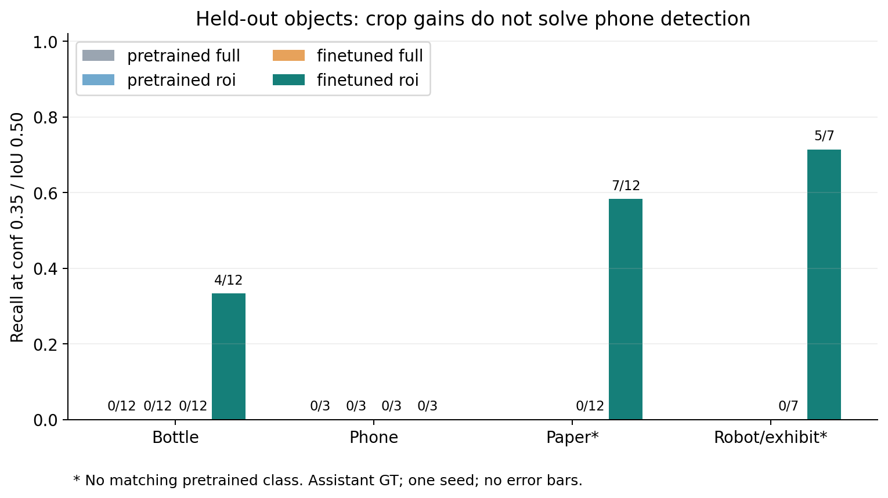
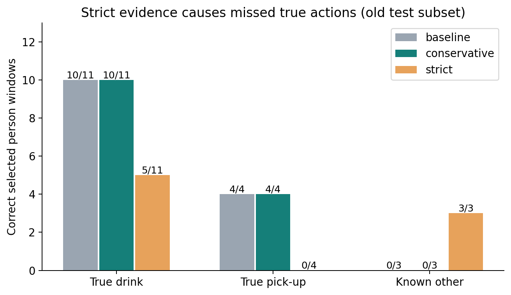
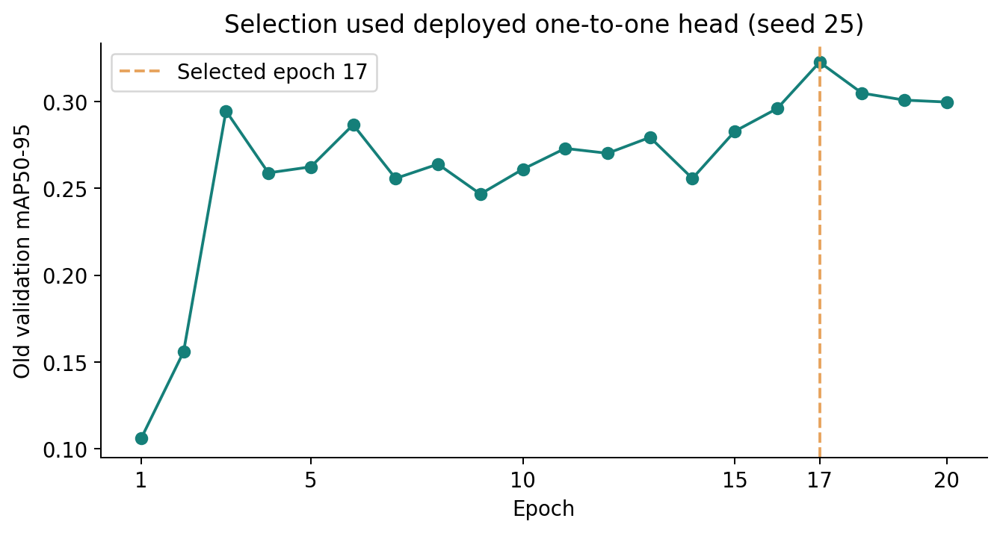
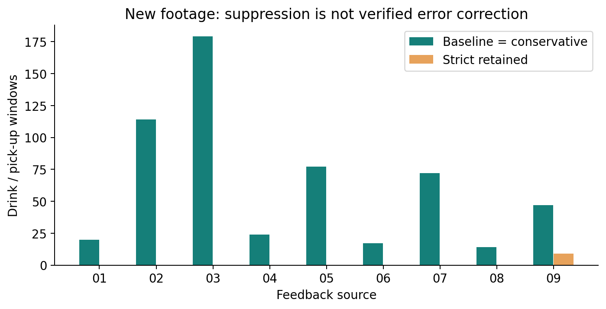

旧测试：真实喝水，严格规则保留
旧测试真实喝水；连续检出瓶，两种规则均保留。
2026-10-26 · 单次训练 seed25 · 独立实验候选
本候选未启用到正式平台。正式包已改为“跑动”、动作阈值0.85；原镜像不变。保守规则在新9段否决0窗，严格规则会误杀真实动作，且相机误判为瓶的反例仍会被放行。
完整分析 · 统计与限制 · 407个最终标注视图 · 454片段对应CSV · 复现 · 交付说明
| 检查 | 结论 |
|---|---|
| 旧物体test | 微调裁剪：瓶4/12、纸7/12、展品5/7、手机0/3；杯/相机无留出支持。 |
| 旧动作test子集 | 正确喝水 原10→保守10→严格5 /11；正确捡物4→4→0 /4。 |
| 新9段固定规则回放 | 564个喝水/捡物窗；保守否决0，严格否决555。没有完整动作真值。 |
| 原454片段覆盖 | 0.85后363段覆盖同人同动作窗口，保守仍363段；不是重新保存的数量。 |
左侧是原视频连续播放；右侧是明确标记的冻结采样帧。标题是所选窗口的判断，不是新一轮连续实时输出。黄框是物体预测，不能直接当真值。
旧测试真实喝水；连续检出瓶，两种规则均保留。
旧测试真实喝水；瓶只断续检出，严格规则误杀。
旧测试真实捡物；有纸张框，但连续抬起证据不足。
本人手里的亮屏手机未被可靠检出；邻人的手机不能否决本人的动作。
实际是机器人展品，仅一帧约0.40，未达到持续否决条件。
关键反例：视觉上是相机拍摄，模型却持续预测为瓶，严格规则仍保留喝水。
手靠近头部；零星“瓶”预测缺少可靠物体身份，保守保持原结果。
人物站立、手在背后，未见连续捡起动作；原模型仍预测捡物。




535历史来源按帧抽样审核，831条审核记录；不是逐帧密集标注。新9段及454片段未用于训练/选模。所有照片与视频均为真实数据，未生成或补造物体细节。